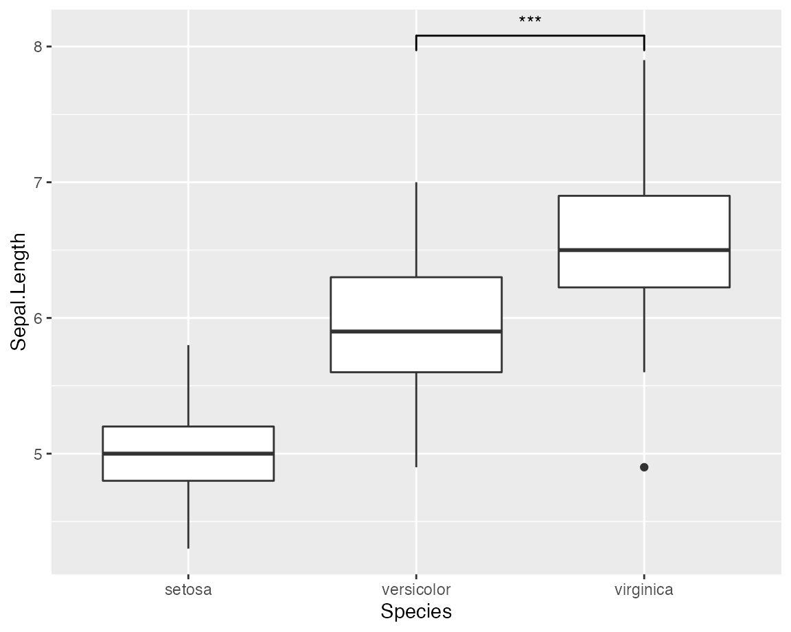

vignettes/intro.Rmd
intro.RmdResearch hypotheses often concern with differences between two or multiple groups and significance-based hypothesis testing can provide indices for evidence for such differences. Naturally, when people are visualizing such group differences, they might also wish to quickly annotate if the difference between two levels of group in a plot is significantly different (look at all those questions). This package does exactly that! It provides a single layer geom_signif which can calculate the significance of a difference between groups and add the annotation to the plot in a single line. In doing so, it further extends the fundamental strength of ggplot, which allows one to quickly make advanced plots by combining layers of visualization, which can encapsulate complex statistical methods (geom_smooth, geom_contour etc.).
First step: load the needed packages.
Second step: plot your data.
ggplot(iris, aes(x = Species, y = Sepal.Length)) +
geom_boxplot() + # using `ggsignif` to display comparison of interest
geom_signif(
comparisons = list(c("versicolor", "virginica")),
map_signif_level = TRUE
)
That’s it, it is as simple as that!
Note that, if we were to statistically analyze this data, we would run a one-way ANOVA to assess if any of the group means differ from each other and then follow up with post hoc multiple comparisons to do more fine-grained comparisons between different levels of the group. The ggsignif package provides a way to graphically display all or a few (depending on the research hypotheses context) of such comparisons.
Sometimes one might need more advanced control over the display. For example, instead of a one-way ANOVA design, you can have a complex multiway-ANOVA design. In such instances, you may wish to have a much finer control over which comparisons to include for pairwise comparison displays.
To specify exactly where the bracket is drawn use the y_position, xmin and xmax parameters combined with a custom annotations. This is always necessary if geom_signif is combined with another layer that uses position="dodge", because it changes the location of the visual elements without updating the data.
dat <- data.frame(
Group = c("S1", "S1", "S2", "S2"),
Sub = c("A", "B", "A", "B"),
Value = c(3, 5, 7, 8)
)
ggplot(dat, aes(Group, Value)) +
geom_bar(aes(fill = Sub), stat = "identity", position = "dodge", width = .5) +
geom_signif(
y_position = c(5.3, 8.3), xmin = c(0.8, 1.8), xmax = c(1.2, 2.2),
annotation = c("**", "NS"), tip_length = 0
) +
geom_signif(
comparisons = list(c("S1", "S2")),
y_position = 9.3, tip_length = 0, vjust = 0.2
) +
scale_fill_manual(values = c("grey80", "grey20"))For more detailed documentation of the available parameters see the manual page for the geom_signif function: https://const-ae.github.io/ggsignif/reference/stat_signif.html
If you have any problems with the package, just file an issue at https://github.com/const-ae/ggsignif.